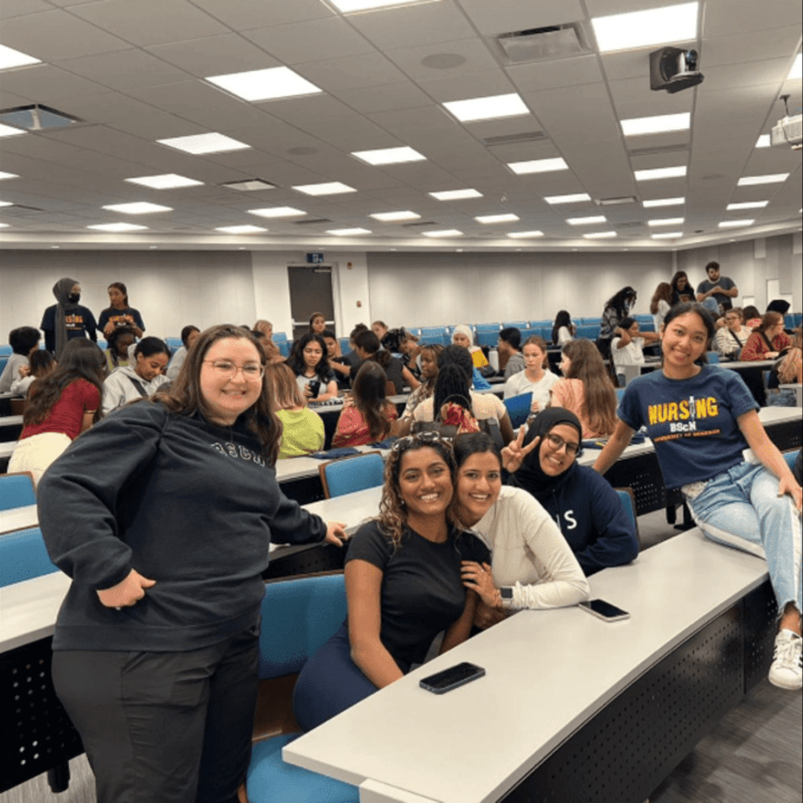

Gallery
Check out some pictures from events I’ve helped run!
Ontario Universities’ Fair 2022

NS First-Year Welcome Event

Hi everyone! My name is Gauri and I’m campaigning to be your next President-Elect on Nursing Society! I am an executive on NS this school year and serve as your Treasurer! My journey with NS started at the end of first year when I was elected as Jr. Treasurer, fast forward to now as Treasurer. Now, in my third year, I ask you for the opportunity to serve as your President for the 2023-2024 school year!
Some of you may know me from around campus, but I’d love to take a moment to explain more about what I do. At present, I work closely with our team of executives to run events, set, budgets, organize our finances, and approve/help run event requests that go towards your graduation and pinning ceremony. Being an executive, I work very closely with our President to make sure everything runs smoothly. With my experience, I believe I will be able to seamlessly transition into the role of President.
Compassionate, approachable, dedicated, and dependable are some of the few characteristics of a successful leader.
I love to chase my goals, and of those very goals was to give back the support to students that I was once given. Becoming a Peer Mentor has fulfilled that goal - I get to help calm your nerves!
At present, I sit on two faculty councils – our Student Recruitment Committee and the Medication and Patient Safety Advisory Committee. I work very closely alongside our faculty to share the student perspective, make our voice heard, and represent Nursing Society. I am absolutely honoured and grateful for every opportunity I have to devote myself to our faculty.
I’ve used many of my platforms on campus to advocate for nursing, such as writing magazine articles on student life and nursing (scroll to the end to check some out!). I think being able to forge connections and being dedicated and experienced is a crucial aspect of being President. These experiences have given me the knowledge and skill I need to be your next President.
In the end, I want you guys to choose what you think if best for you and look forward to seeing your support! Voting is on October 24th and 25th, so keep on the lookout for the voting link in your email!
Elected as Treasurer (Executive Council) by BScN students at the University of Windsor for the 2022-23 academic year, previously the Jr. Treasurer (2021-22).
Mentor, support, and calm the nerves of students by being the first line of support in answering questions, setting up for labs, working behind the scenes to ensure a simulated clinical experience is present in our lab.
Experienced and trained to offer one-on-one appointments, workshops, and drop-ins to help students with resume and cover letter writing.
Initiate and coordinate the process of developing the shadowing program. Propose ideas for meeting arrangements between mentors and mentees. Develop new positions for starting the shadowing program.
•Co-facilitated and represented the Nursing Booth at Spring Open House 2022
•Faculty Student Representative for Ontario Universities’ Fair 2022 in Toronto
•Helped plan and execute Fall Open House 2021 welcoming prospective nursing students